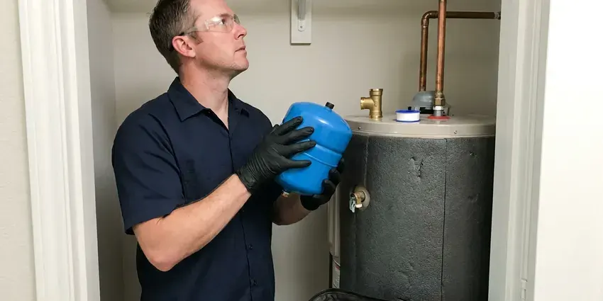

Tankless Water Heater Installation in Summerlin South, NV
Cold water at the far bathroom for a full minute? We add recirculation to tankless installs in Summerlin South, NV.
- Permits Pulled
- Gas Line Sizing
- Flush Valves Installed
- High-Efficiency Models

Schedule a Tankless Estimate in Summerlin South, NV
Give us your bathroom count and we can rough out the right size on the phone.
Switching From a Tank to Tankless in Summerlin South, NV
FMR Plumbing sizes and installs on-demand heaters that make hot water only while a tap is open. We work out peak gallons per minute, take the incoming water temperature and make sure the gas supply can feed up to 199,000 BTU. Then the install begins. The unit, vent and isolation valves go in to the manufacturer's specifications, and we test the gas piping before lighting it.
Our expertise includes:
- Electric whole-home and point-of-use tankless heaters
- Recirculation pump setups for distant fixtures
- Service valves for yearly descaling

Additional Plumbing Installation Services in Summerlin South, NV
We install water heaters, pumps, lines, and fixtures across Summerlin South, NV with careful, permitted work that passes inspection the first time.


Customers
Why Choose FMR Plumbing for Tankless Water Heater Installation in Summerlin South, NV?
Tankless heaters cost more up front than tanks, so getting the install right matters. An undersized unit that short-cycles or a vent that ices up will keep throwing error codes, and you pay for it every month. Sizing is math, not a guess.
- Gas Done Right, Gas lines are sized by load and length then pressure test it.
- Accurate Sizing, We size by gallons per minute and incoming water temperature.
- Lower Gas Use, High-efficiency units reach well over 90 percent efficiency.
Citywide Coverage
Service calls across Summerlin South get the same crew and the same process. Condo or big two-story, each one gets flow sizing, a gas check, a written price and a pressure test before first fire. Bigger homes just get bigger units.
Experienced Team
Our licensed plumbers install tankless heaters in Nevada homes every week, on gas and propane alike. They are trained on the current models from the major makers, and they keep up with the vent and gas sizing tables that change when a manufacturer updates a unit. New models bring new specs.
Safety-First Approach
Every unit gets vented exactly to the manufacturer's rules, which is how FMR Plumbing protects your home and family. Vent terminations have to sit specific distances from windows, doors, air intakes and the ground, because exhaust that drifts back inside carries carbon monoxide. We measure every one.
Trusted Certified Summerlin South Plumbing Services Professionals
At FMR Plumbing, we are proud to offer certified plumbing services throughout Summerlin South, NV. Those papers on the wall mean something. Every repair, install and maintenance visit follows strict safety and quality rules, and the plumbers doing the work carry recognized industry credentials.
Call Us Now PHCC Plumbing Contractor Recognition
PHCC Plumbing Contractor Recognition Better Business Bureau (BBB) Accreditation
Better Business Bureau (BBB) Accreditation Angi Certified Pro
Angi Certified Pro ISO 9001 Quality Management Certification
ISO 9001 Quality Management CertificationTankless Water Heater Installation in Summerlin South, NV
Tankless vs Tank Cost Comparison in Summerlin South, NV
Upfront, a tankless install in Summerlin South, NV costs more than a standard tank because of the unit price, the gas line upgrade and the venting changes. Over the long haul, the math narrows. Lower standby loss, a lifespan of up to 20 years against about 10 for a tank, and parts that can be replaced instead of the whole unit all count toward the total cost of ownership. Ask for both prices.

Electric Tankless Water Heater Installation in Summerlin South, NV
Electric tankless heaters make sense in Summerlin South, NV homes without gas, or for a single sink or a guest bath far from the main heater. A whole-home electric unit draws heavy amperage. Some models need two or three 40 to 60 amp double-pole breakers, more than a 100-amp panel can usually spare alongside the range and AC. We check the panel first.
Commercial Tankless Water Heater Installation in Summerlin South
Commercial hot water loads in Summerlin South are heavier and more constant than residential. A busy restaurant may run a dish machine, three hand sinks and a mop sink at once, and the tankless rack has to hold temperature through the whole lunch rush without dropping a degree. We rack units with a common manifold. Service one, keep the others going.
Upgrading from Tank to Tankless in Summerlin South, NV
Switching from a tank is more than a swap. A 40-gallon tank burns about 40,000 BTU, but a whole-home tankless unit may need 150,000 to 199,000, so the meter line nearly always gets bigger. Venting changes too. We plan both on the quote.
Navien Tankless Water Heater Installation in Summerlin South
Navien builds condensing tankless units with stainless heat exchangers, and many models include a built-in recirculation pump. That pump can push hot water toward a far bathroom on a schedule, which shortens the wait at the tap without adding a separate pump under the sink. Navien vents in PVC. There is a condensate line to route as well.
Residential Tankless System Upgrades in Summerlin South
Upgrading from a tank in Summerlin South starts with a look at what you have now: tank size, vent type, gas line size and where the unit sits. In some homes the old flue gets capped and the new unit vents out a side wall in PVC, which is simpler and opens the old chase. Some homes need more vent pipe. We spell that out on the quote.
Gas Tankless Water Heater Installation in Summerlin South
Gas tankless units in Summerlin South are the common pick for whole-house hot water because a single 199,000 BTU burner can feed two showers and a sink at the same time without losing temperature. Gas is the catch. In most houses, the line from the meter has to be upsized, often from half-inch to three-quarter inch or bigger. We test the new gas piping before first fire.

Commercial Tankless Water Heater Services in Summerlin South, NV
Businesses in Summerlin South, NV with steady hot water use, like salons, restaurants and small gyms, often get more out of two or three tankless units racked together than one big tank. If one unit goes down, the others keep running. Peak demand sets the rack size. Commercial installs usually need a larger gas service and a mechanical permit.
Tankless Plumbers Near You in Summerlin South, NV
Being close by lets us get to small problems fast. A flashing error code, a unit that will not fire or a vent knocked loose in a storm are things we can often get to the same day. We stock common parts.
Our plumbers know the permit routine in Summerlin South, NV, which keeps conversions on schedule. Gas line work needs a pressure test the inspector can see, so we time the test and the inspection around your install day rather than leaving you waiting with a half-finished job. It saves a day.
FMR Plumbing at a Glance
- Fully licensed plumbing team covering Summerlin South, NV
- 24/7 emergency service with same-day scheduling
- Clear written estimates, no hidden fees
- 4.8-star rated by 903+ Nevada customers
Summerlin South Map
Summerlin South Information
- Population
- 30,744
- Area codes
- Local
- Service area
- Summerlin South and communities within 40 miles
- Nearby
- Spring Valley, Las Vegas, Enterprise, Winchester
The flow math comes first: how many fixtures run at once and how cold the incoming water is decide which tankless unit fits a Summerlin South, NV home.
Expert Services
Reach out to FMR Plumbing for honest, reliable plumbing from people who know the trade in Summerlin South, NV.
Our Specialized Plumbing Services in Summerlin South, NV
At FMR Plumbing, you get every kind of plumbing service from one company across Summerlin South, NV. From leak detection to full system installs, our team works fast and charges fair prices on homes and commercial properties alike. Explore our core services below:


How a Tankless Job Runs in Summerlin South, NV
What happens from the first call to the first hot tap on your tankless job.
In-Home Estimate
Call (725) 360-1766 to set up an estimate. You get a written quote covering unit, gas and vent.
Install and Upgrade
We install the unit, upgrade the gas line and run new venting. Most jobs finish in a day.
Test and Show You
After testing gas and water, we go over the controls with you. You also learn the yearly flush.
Frequently Asked Questions About Tankless Water Heater Installation in Summerlin South
Tankless installs in Summerlin South tend to fall between $3,000 and $6,000. The fuel type, unit size, gas line work and venting route are what push a job toward the low or high end. We price it after a visit.
Heat exchangers are commonly warrantied for 10 to 15 years, with 3 to 5 years on parts. FMR Plumbing adds its own workmanship warranty on the install.
We advise against it. A tankless install involves gas line sizing, venting clearances, electrical and a permit, and a mistake on any of them can cause carbon monoxide problems or void the warranty. Warranties usually need a pro install.
No. Gas, water, vent and electrical connections all have to meet code, and a leaking gas joint or loose vent is a safety hazard, not a minor problem. Most makers deny DIY claims.
They are, in almost any climate. Intense summer heat and a dry climate are the main stresses on plumbing in Nevada, especially in the southern part of the state. Because they only heat water on demand, they avoid the standby heat loss that a tank has all day and all night, which adds up even in milder months. Colder inlet water does mean a bigger unit.
For most Nevada homes, yes. The efficiency gains depend on how much hot water you use, how cold the incoming water gets and whether your gas line can be upsized at a reasonable cost. We give you an honest read.
Usually some, because there is no standby heat loss. How much depends on your household and usage.
Sized correctly, yes. Large families with three or more bathrooms often need a unit rated at 9 or 10 gallons per minute at their temperature rise, or two units linked together, to keep every shower steady during the morning rush. Sizing is the whole game.
What People Are Saying About Our Plumbing Experts?

Marcus H.
Grease from the fryer line kept clogging the kitchen drain at my diner. FMR Plumbing hydro jetted the line after closing, showed me the buildup on camera, and set us up on a quarterly cleaning so it does not catch us on a Friday again.
Drain Cleaning · Spring Valley, NV
Sofia M.
Two new toilets went in during one visit. The tech set them on new wax rings and swapped the old supply lines. He also noticed our bathroom faucet dripping and replaced the cartridge while he was there. No mess left behind.
Toilet Installation · Las Vegas, NV
Mark T.
The floor drain in our office break room backed up every few weeks. The plumber ran a cable, then put a camera down and found roots at a joint about thirty feet out. Seeing it on the screen made the decision easy.
Drain Cleaning · Las Vegas, NV
Nathan E.
Our tankless heater kept throwing an error code and shutting off mid shower. The tech flushed the heat exchanger, which was full of scale, and replaced a bad flow sensor. Hot water has been steady for half a year now.
Water Heater Repair · Paradise, NVLaura S.
Our 40 gallon tank started leaking from the bottom after thirteen years. The tech hauled the old one out, set a new unit with a fresh expansion tank, and had hot water running in about four hours. He took the old tank with him too.
Water Heater Replacement · Enterprise, NVPaul B.
Our pit pump ran nonstop even in dry weather. The plumber found the check valve was stuck open, so the same water kept cycling back into the pit. New valve, new float switch, done in an hour. It runs quiet now.
Sump Pump · Las Vegas, NV